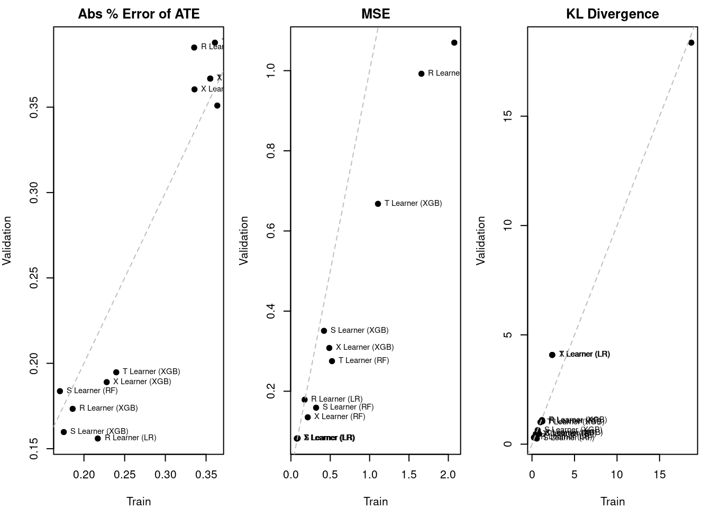
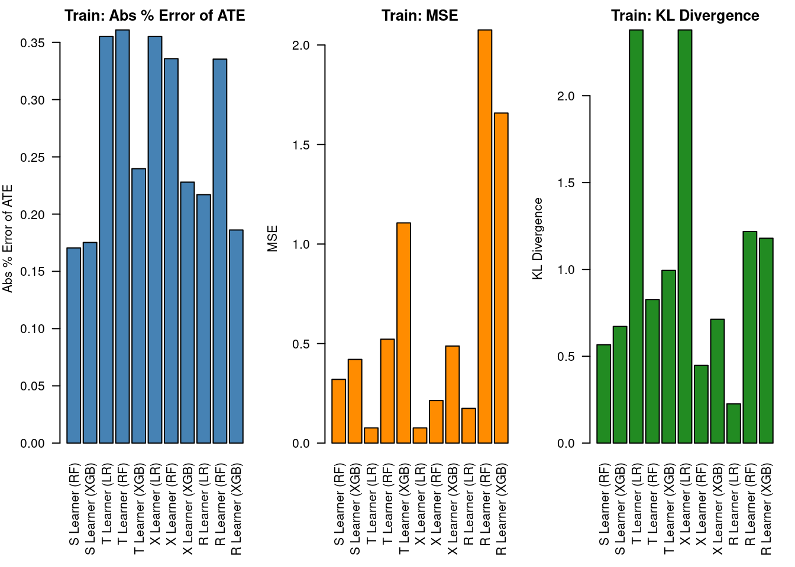
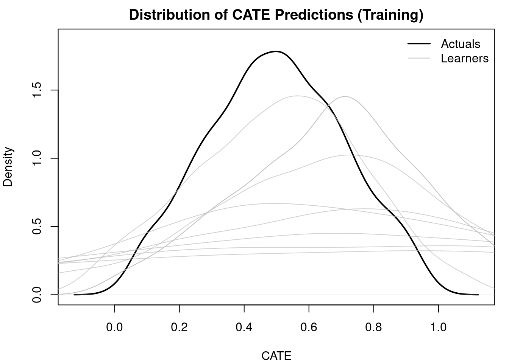
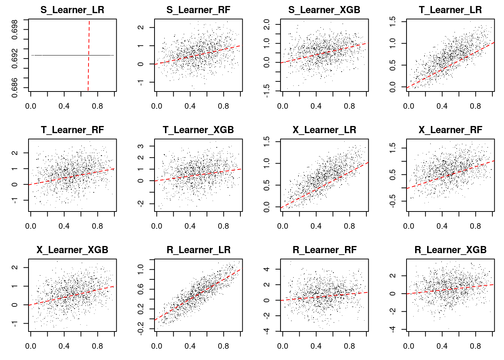
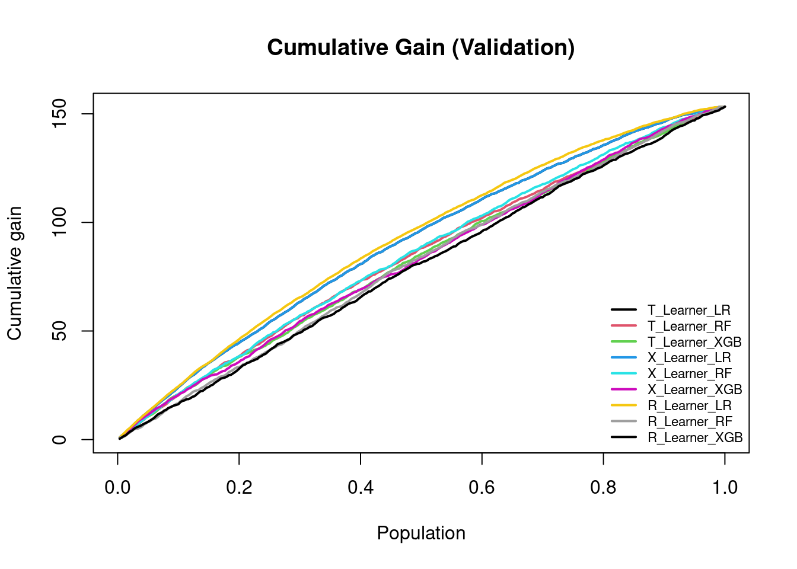
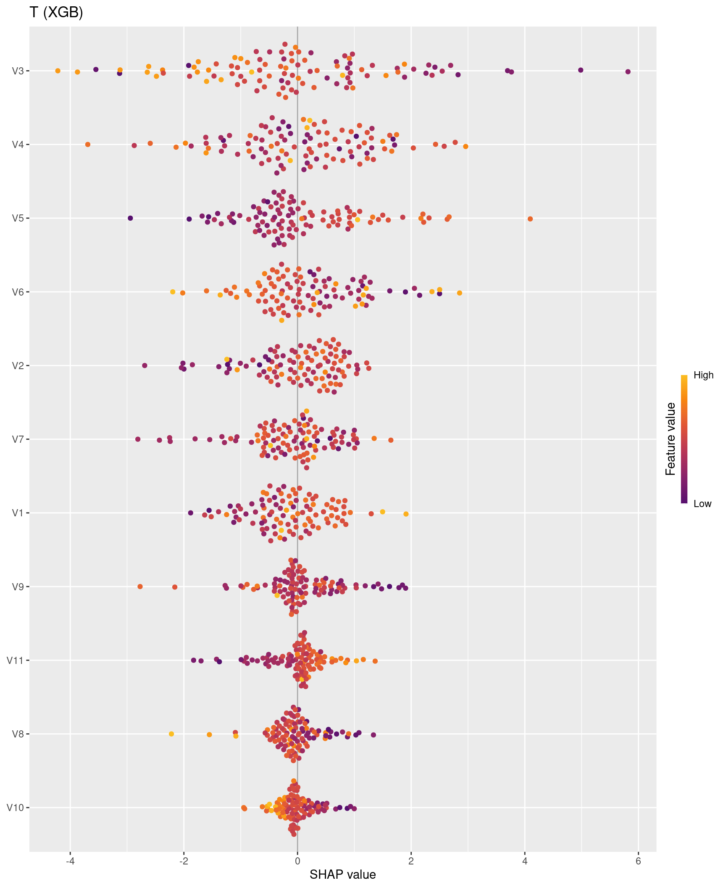
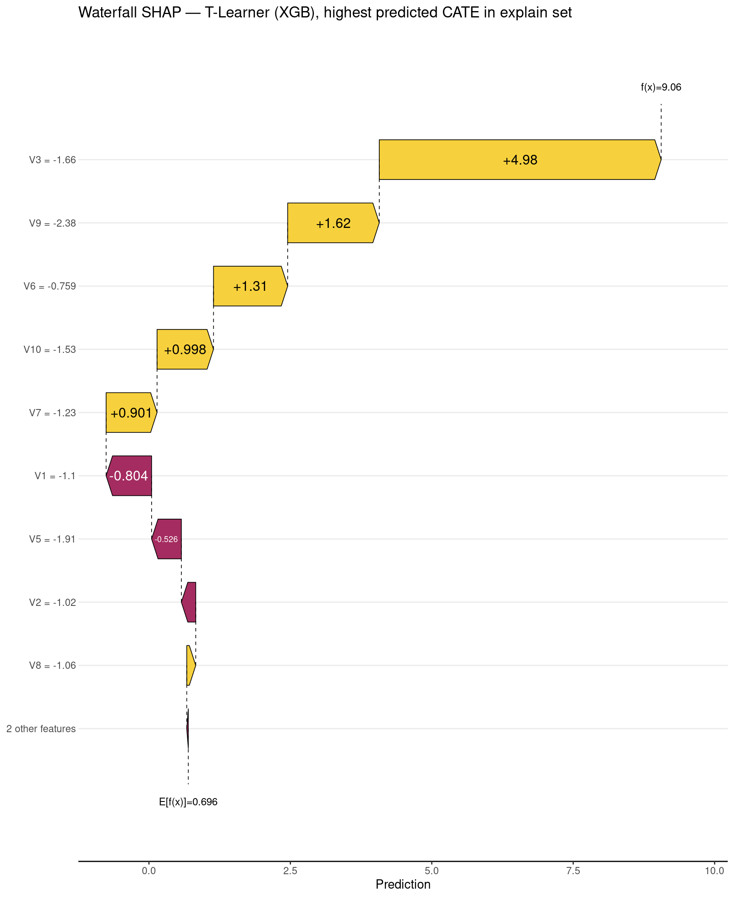
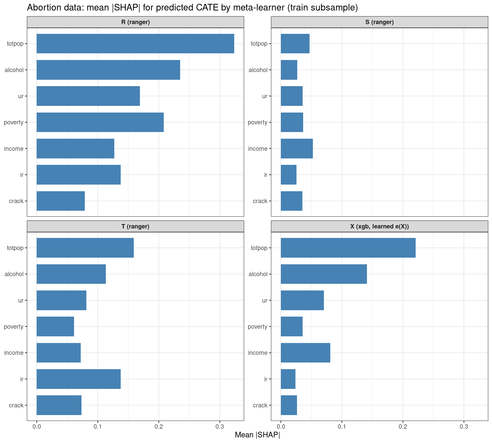
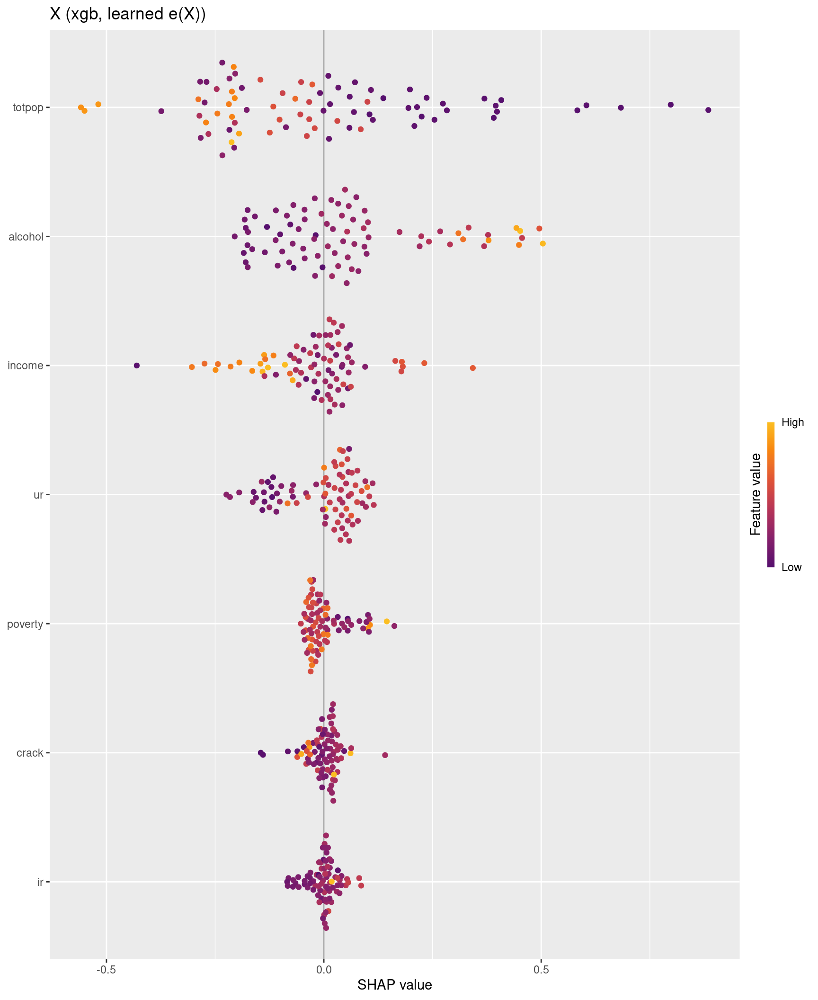
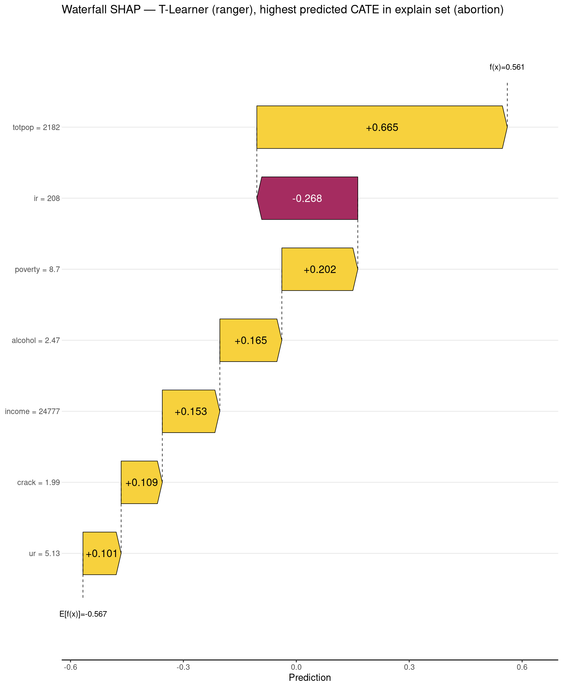

Code
packages <- c(
"tidyverse",
"plyr",
"RCausalML",
"causaldata",
"mlbench",
"xgboost",
"future",
"kernelshap",
"shapviz"
)

Meta-learners are flexible, modular frameworks designed to estimate the Conditional Average Treatment Effect (CATE) by decomposing the causal estimation problem into one or more supervised learning sub-problems. Rather than requiring a purpose-built causal model, meta-learners treat any regression or classification algorithm — such as random forests, gradient boosting machines, LASSO, or neural networks — as a plug-in “base learner,” making them highly adaptable to a wide range of data settings. This separation of concerns between the causal structure and the predictive machinery is one of the defining advantages of the meta-learning approach.
For binary treatments, where \(W_i \in \{0, 1\}\) indicates whether unit \(i\) received the treatment, the central challenge is to recover individual-level treatment effect heterogeneity from observed outcomes. The key idea across all binary-treatment meta-learners is to leverage the treatment indicator in structurally different ways — either by fitting separate outcome models for each treatment arm, by modeling the treatment propensity directly, or by constructing pseudo-outcomes that isolate the treatment effect signal. These design choices lead to a family of estimators that differ substantially in their assumptions, bias-variance tradeoffs, and sensitivity to model misspecification.
Binary treatment meta-learners are particularly consequential in observational studies, where treatment assignment is not randomized and is instead driven by observed (and potentially unobserved) covariates. In such settings, naive comparisons between treated and control units conflate the treatment effect with confounding — systematic differences in baseline characteristics between the two groups. Meta-learners address confounding through unconfoundedness (or ignorability) assumptions, combined with careful modeling of the outcome and/or treatment assignment process. The quality of CATE estimates therefore depends critically on the richness of the observed covariate set and the adequacy of the base learner in capturing the relevant data structure.
The most widely studied meta-learners for binary treatments include:
The S-Learner (Single learner), which fits a single outcome model including the treatment indicator as a feature, and recovers the CATE as the difference in predicted outcomes under \(W = 1\) versus \(W = 0\). Its simplicity makes it computationally attractive, but it can suffer from regularization bias if the base learner shrinks the treatment indicator coefficient toward zero.
The T-Learner (Two-model learner), which fits separate outcome models for the treated and control groups and estimates the CATE as their difference. This approach naturally allows treatment effect heterogeneity but can exhibit high variance when the two groups are imbalanced in size or covariate distribution.
The X-Learner, which extends the T-Learner by constructing imputed treatment effects for each unit using the other group’s fitted model, and then combining these estimates via a weighting function, often based on the propensity score. The X-Learner is especially effective in settings with significant imbalance between treatment and control group sizes.
The R-Learner (Robinson decomposition learner), which builds on the partial linear residualization idea of Robinson (1988) to orthogonalize both the outcome and the treatment before fitting the CATE. It is designed to target the CATE directly, and enjoys favorable theoretical properties under cross-fitting, connecting closely to the double/debiased machine learning literature.
The DR-Learner (Doubly Robust learner), which leverages augmented inverse probability weighting (AIPW) to construct doubly robust pseudo-outcomes. An estimator is doubly robust in the sense that it remains consistent if either the outcome model or the propensity score model is correctly specified — though not necessarily both.
Each meta-learner embodies a different set of implicit assumptions and practical tradeoffs. Their performance is highly sensitive to characteristics of the data, including: (i) the degree of treatment group imbalance, which can destabilize estimators that rely heavily on extrapolation across groups; (ii) the smoothness and complexity of the underlying CATE function, which determines how well the base learner can approximate it; (iii) the signal-to-noise ratio in the outcome, which affects variance of effect estimates; and (iv) the overlap in covariate distributions between treated and control units, which is a prerequisite for identification in observational settings. Understanding these sensitivities is essential for selecting an appropriate meta-learner in practice, and motivates the use of simulation studies and cross-validated evaluation strategies.
In this notebook, we will generate some synthetic data to demonstrate how to use the various Meta-Learner algorithms with RCausalML in order to estimate Individual Treatment Effects and Average Treatment Effects with confidence intervals. We will also validate the meta-learners’ performance using the same synthetic data generation, comparing three base regressors: Linear Regression (lm), Random Forest (R package ranger), and XGBoost (R package xgboost), across S-, T-, X-, and R-learners. We will run k simulations (3 when CAUSALML_FAST_RENDER=TRUE, 10 otherwise) with train/validation split and report Abs % Error of ATE, MSE, and KL Divergence (like the Python CausalML example).
Following R packages are required to run this notebook. If any of these packages are not installed, you can install them using the code below:
tidyverse, plyr, RCausalML, causaldata, mlbench, xgboost, future, kernelshap, shapviz
packages <- c(
"tidyverse",
"plyr",
"RCausalML",
"causaldata",
"mlbench",
"xgboost",
"future",
"kernelshap",
"shapviz"
)# Install missing packages
# new_packages <- packages[!(packages %in% installed.packages()[, "Package"])]
# if (length(new_packages)) install.packages(new_packages)# Load packages with suppressed messages
invisible(lapply(packages, function(pkg) {
suppressPackageStartupMessages(library(pkg, character.only = TRUE))
}))# Check loaded packages
cat("Successfully loaded packages:\n")Successfully loaded packages: [1] "package:shapviz" "package:kernelshap" "package:future"
[4] "package:xgboost" "package:mlbench" "package:causaldata"
[7] "package:RCausalML" "package:plyr" "package:lubridate"
[10] "package:forcats" "package:stringr" "package:dplyr"
[13] "package:purrr" "package:readr" "package:tidyr"
[16] "package:tibble" "package:ggplot2" "package:tidyverse"
[19] "package:stats" "package:graphics" "package:grDevices"
[22] "package:utils" "package:datasets" "package:methods"
[25] "package:base" We have implemented 4 modes of generating synthetic data (specified by input parameter mode). Refer to the References section for more detail on these data generation processes.
set.seed(42)
# Base regressors: Linear Regression (lm), Random Forest (ranger), XGBoost (xgboost)
# We use the R packages 'ranger' and 'xgboost' for RF and XGB
has_ranger <- requireNamespace("ranger", quietly = TRUE)
has_xgboost <- requireNamespace("xgboost", quietly = TRUE)
if (!has_ranger) stop("Package 'ranger' is required. Install with install.packages(\"ranger\")")
if (!has_xgboost) stop("Package 'xgboost' is required. Install with install.packages(\"xgboost\")")
# Fast render: use smaller n/k for quicker render (set CAUSALML_FAST_RENDER=FALSE for full run)
fast_run <- Sys.getenv("CAUSALML_FAST_RENDER", "TRUE") == "TRUE"
# Fast-run tuning: smaller data, fewer trees/rounds, fewer CV folds
n_partA <- if (fast_run) 600 else 10000
nrounds_xgb <- if (fast_run) 20 else 50
num_trees_rf <- if (fast_run) 30 else 500
n_fold_r <- if (fast_run) 3 else 5
k_holdout <- if (fast_run) 2 else 10
n_sim_holdout <- if (fast_run) 1000 else 10000
n_one_pred <- if (fast_run) 1500 else 50000# Generate synthetic data using mode 2 (n_partA set in setup for fast vs full run)
# CausalML-style synthetic_data(mode = 2) uses X[,1]–X[,11] for tau; require p >= 11
d <- synthetic_data(mode = 2, n = n_partA, p = 11, sigma = 1.0)
y <- d$y
X <- d$X
treatment <- d$w
tau <- d$tau
b <- d$b
e <- d$eA meta-learner can be instantiated by providing a base regressor: Linear Regression (lm), Random Forest (ranger), or XGBoost (xgb). We use the R packages ranger and xgboost for RF and XGB.
# S-Learner with Linear Regression (LRSRegressor)
learner_s <- LRSRegressor()
learner_s <- fit(learner_s, X, treatment, y)
ate_s <- estimate_ate(learner_s, X = X, treatment = treatment, y = y)
cat("S-Learner with Linear Regression:\n")S-Learner with Linear Regression:print(ate_s)$ate
w
0.366896
$ate_lb
[1] -0.9130743
$ate_ub
[1] 1.646866# S-Learner with Random Forest (ranger) and XGBoost
learner_s_rf <- fit(SLearner(learner = "ranger"), X, treatment, y, num.trees = num_trees_rf)
ate_s_rf <- estimate_ate(learner_s_rf, X = X, treatment = treatment, y = y)
cat("\nS-Learner with Random Forest (ranger):\n")
S-Learner with Random Forest (ranger):print(ate_s_rf)$ate
[1] 0.3476187
$ate_lb
[1] 0.02738613
$ate_ub
[1] 0.6678513learner_s_xgb <- fit(SLearner(learner = "xgb"), X, treatment, y, nrounds = nrounds_xgb)
ate_s_xgb <- estimate_ate(learner_s_xgb, X = X, treatment = treatment, y = y)
cat("\nS-Learner with XGBoost:\n")
S-Learner with XGBoost:print(ate_s_xgb)$ate
[1] 0.1882827
$ate_lb
[1] 0.01582849
$ate_ub
[1] 0.3607368# T-Learner with Linear Regression (lm)
learner_t_lr <- TLearner(learner = "lm")
learner_t_lr <- fit(learner_t_lr, X, treatment, y)
ate_t_lr <- estimate_ate(learner_t_lr, X = X, treatment = treatment, y = y)
cat("TLearner with Linear Regression:\n")TLearner with Linear Regression:print(ate_t_lr)$ate
[1] 0.2922062
$ate_lb
[1] -0.8487728
$ate_ub
[1] 1.433185# T-Learner with Random Forest (ranger package)
learner_t_rf <- TLearner(learner = "ranger")
learner_t_rf <- fit(learner_t_rf, X, treatment, y, num.trees = num_trees_rf)
ate_t_rf <- estimate_ate(learner_t_rf, X = X, treatment = treatment, y = y)
cat("\nTLearner with Random Forest (ranger):\n")
TLearner with Random Forest (ranger):print(ate_t_rf)$ate
[1] 1.401984
$ate_lb
[1] 0.9847399
$ate_ub
[1] 1.819228# T-Learner with XGBoost (xgboost package) — ready-to-use XGBTRegressor
learner_t_xgb <- TLearner(learner = "xgb")
learner_t_xgb <- fit(learner_t_xgb, X, treatment, y, nrounds = nrounds_xgb)
ate_t_xgb <- estimate_ate(learner_t_xgb, X = X, treatment = treatment, y = y)
cat("\nTLearner with XGBoost (xgb):\n")
TLearner with XGBoost (xgb):print(ate_t_xgb)$ate
[1] 0.980623
$ate_lb
[1] 0.6322125
$ate_ub
[1] 1.329033# X-Learner with propensity score: Linear Regression, Random Forest, XGBoost
learner_x_lr <- XLearner(learner = "lm")
learner_x_lr <- fit(learner_x_lr, X, treatment, y, p = e)
ate_x_lr <- estimate_ate(learner_x_lr, X = X, treatment = treatment, y = y, p = e)
cat("XLearner with Linear Regression and propensity score:\n")XLearner with Linear Regression and propensity score:print(ate_x_lr)$ate
[1] 0.2922062
$ate_lb
[1] -0.8487728
$ate_ub
[1] 1.433185learner_x_rf <- XLearner(learner = "ranger")
learner_x_rf <- fit(learner_x_rf, X, treatment, y, p = e, num.trees = num_trees_rf)
ate_x_rf <- estimate_ate(learner_x_rf, X = X, treatment = treatment, y = y, p = e)
cat("\nXLearner with Random Forest (ranger) and propensity score:\n")
XLearner with Random Forest (ranger) and propensity score:print(ate_x_rf)$ate
[1] 1.245725
$ate_lb
[1] 0.8795722
$ate_ub
[1] 1.611878learner_x_xgb <- XLearner(learner = "xgb")
learner_x_xgb <- fit(learner_x_xgb, X, treatment, y, p = e, nrounds = nrounds_xgb)
ate_x_xgb <- estimate_ate(learner_x_xgb, X = X, treatment = treatment, y = y, p = e)
cat("\nXLearner with XGBoost and propensity score:\n")
XLearner with XGBoost and propensity score:print(ate_x_xgb)$ate
[1] 1.010285
$ate_lb
[1] 0.7831293
$ate_ub
[1] 1.237441learner_x_lr_nop <- XLearner(learner = "lm")
learner_x_lr_nop <- fit(learner_x_lr_nop, X, treatment, y)
ate_x_lr_nop <- estimate_ate(learner_x_lr_nop, X = X, treatment = treatment, y = y)
cat("XLearner with Linear Regression (no propensity score):\n")XLearner with Linear Regression (no propensity score):print(ate_x_lr_nop)$ate
[1] 0.2922062
$ate_lb
[1] -0.8487728
$ate_ub
[1] 1.433185learner_x_rf_nop <- XLearner(learner = "ranger")
learner_x_rf_nop <- fit(learner_x_rf_nop, X, treatment, y, num.trees = num_trees_rf)
ate_x_rf_nop <- estimate_ate(learner_x_rf_nop, X = X, treatment = treatment, y = y)
cat("\nXLearner with Random Forest (no propensity score):\n")
XLearner with Random Forest (no propensity score):print(ate_x_rf_nop)$ate
[1] 1.203275
$ate_lb
[1] 0.8205932
$ate_ub
[1] 1.585957learner_x_xgb_nop <- XLearner(learner = "xgb")
learner_x_xgb_nop <- fit(learner_x_xgb_nop, X, treatment, y, nrounds = nrounds_xgb)
ate_x_xgb_nop <- estimate_ate(learner_x_xgb_nop, X = X, treatment = treatment, y = y)
cat("\nXLearner with XGBoost (no propensity score):\n")
XLearner with XGBoost (no propensity score):print(ate_x_xgb_nop)$ate
[1] 1.010285
$ate_lb
[1] 0.7831293
$ate_ub
[1] 1.237441# R-Learner with propensity score: Linear Regression, Random Forest, XGBoost
learner_r_lr <- RLearner(learner = "lm", n_fold = n_fold_r)
learner_r_lr <- fit(learner_r_lr, X, treatment, y, p = e)
ate_r_lr <- estimate_ate(learner_r_lr, X = X, treatment = treatment, y = y, p = e)
cat("RLearner with Linear Regression and propensity score:\n")RLearner with Linear Regression and propensity score:print(ate_r_lr)$ate
[1] 0.3005315
$ate_lb
[1] -0.8852235
$ate_ub
[1] 1.486287learner_r_rf <- RLearner(learner = "ranger", n_fold = n_fold_r)
learner_r_rf <- fit(learner_r_rf, X, treatment, y, p = e, num.trees = num_trees_rf)
ate_r_rf <- estimate_ate(learner_r_rf, X = X, treatment = treatment, y = y, p = e)
cat("\nRLearner with Random Forest (ranger) and propensity score:\n")
RLearner with Random Forest (ranger) and propensity score:print(ate_r_rf)$ate
[1] 1.131615
$ate_lb
[1] 0.2817584
$ate_ub
[1] 1.981472learner_r_xgb <- RLearner(learner = "xgb", n_fold = n_fold_r)
learner_r_xgb <- fit(learner_r_xgb, X, treatment, y, p = e, nrounds = nrounds_xgb)
ate_r_xgb <- estimate_ate(learner_r_xgb, X = X, treatment = treatment, y = y, p = e)
cat("\nRLearner with XGBoost and propensity score:\n")
RLearner with XGBoost and propensity score:print(ate_r_xgb)$ate
[1] 1.080287
$ate_lb
[1] 0.3046578
$ate_ub
[1] 1.855915# R-Learner without propensity score
learner_r_lr_nop <- RLearner(learner = "lm", n_fold = n_fold_r)
learner_r_lr_nop <- fit(learner_r_lr_nop, X, treatment, y)
ate_r_lr_nop <- estimate_ate(learner_r_lr_nop, X = X, treatment = treatment, y = y)
cat("\nRLearner with Linear Regression (no propensity score):\n")
RLearner with Linear Regression (no propensity score):print(ate_r_lr_nop)$ate
[1] 0.0829335
$ate_lb
[1] -1.099729
$ate_ub
[1] 1.265596learner_r_rf_nop <- RLearner(learner = "ranger", n_fold = n_fold_r)
learner_r_rf_nop <- fit(learner_r_rf_nop, X, treatment, y, num.trees = num_trees_rf)
ate_r_rf_nop <- estimate_ate(learner_r_rf_nop, X = X, treatment = treatment, y = y)
cat("\nRLearner with Random Forest (no propensity score):\n")
RLearner with Random Forest (no propensity score):print(ate_r_rf_nop)$ate
[1] 0.9920067
$ate_lb
[1] 0.1610745
$ate_ub
[1] 1.822939learner_r_xgb_nop <- RLearner(learner = "xgb", n_fold = n_fold_r)
learner_r_xgb_nop <- fit(learner_r_xgb_nop, X, treatment, y, nrounds = nrounds_xgb)
ate_r_xgb_nop <- estimate_ate(learner_r_xgb_nop, X = X, treatment = treatment, y = y)
cat("\nRLearner with XGBoost (no propensity score):\n")
RLearner with XGBoost (no propensity score):print(ate_r_xgb_nop)$ate
[1] 0.7572987
$ate_lb
[1] -0.05477129
$ate_ub
[1] 1.569369CATE stands for Conditional Average Treatment Effect.
# Predict CATE for all base learners (Linear Regression, Random Forest, XGBoost)
cate_s <- predict(learner_s, X)
cate_t_lr <- predict(learner_t_lr, X)
cate_t_rf <- predict(learner_t_rf, X)
cate_t_xgb <- predict(learner_t_xgb, X)
cate_x_lr <- predict(learner_x_lr, X)
cate_x_rf <- predict(learner_x_rf, X)
cate_x_xgb <- predict(learner_x_xgb, X)
cate_x_no_p_lr <- predict(learner_x_lr_nop, X)
cate_x_no_p_rf <- predict(learner_x_rf_nop, X)
cate_x_no_p_xgb <- predict(learner_x_xgb_nop, X)
cate_r_lr <- predict(learner_r_lr, X)
cate_r_rf <- predict(learner_r_rf, X)
cate_r_xgb <- predict(learner_r_xgb, X)
cate_r_no_p_lr <- predict(learner_r_lr_nop, X)
cate_r_no_p_rf <- predict(learner_r_rf_nop, X)
cate_r_no_p_xgb <- predict(learner_r_xgb_nop, X)# Distribution of CATE predictions by meta learner (T, X, R with LR, RF, XGB)
alpha <- 0.2
bins <- 30
par(mar = c(4, 4, 3, 1))
hist(cate_t_lr, col = adjustcolor("blue", alpha), breaks = bins, border = NA,
main = "Distribution of CATE Predictions by Meta Learner",
xlab = "Individual Treatment Effect (ITE/CATE)", ylab = "# of Samples")
hist(cate_t_rf, col = adjustcolor("cyan", alpha), breaks = bins, border = NA, add = TRUE)
hist(cate_t_xgb, col = adjustcolor("navy", alpha), breaks = bins, border = NA, add = TRUE)
hist(cate_x_lr, col = adjustcolor("red", alpha), breaks = bins, border = NA, add = TRUE)
hist(cate_x_rf, col = adjustcolor("orange", alpha), breaks = bins, border = NA, add = TRUE)
hist(cate_x_xgb, col = adjustcolor("darkred", alpha), breaks = bins, border = NA, add = TRUE)
hist(cate_r_lr, col = adjustcolor("green", alpha), breaks = bins, border = NA, add = TRUE)
hist(cate_r_rf, col = adjustcolor("darkgreen", alpha), breaks = bins, border = NA, add = TRUE)
hist(cate_r_xgb, col = adjustcolor("forestgreen", alpha), breaks = bins, border = NA, add = TRUE)
s_val <- if (length(cate_s) > 1) mean(cate_s) else cate_s[1]
abline(v = s_val, lty = 2, col = "black", lwd = 2)
legend("topright",
legend = c("T (LR)", "T (RF)", "T (XGB)", "X (LR)", "X (RF)", "X (XGB)", "R (LR)", "R (RF)", "R (XGB)", "S Learner"),
fill = c("blue", "cyan", "navy", "red", "orange", "darkred", "green", "darkgreen", "forestgreen", NA),
lty = c(rep(NA, 9), 2), lwd = c(rep(NA, 9), 2), col = c(rep(NA, 9), "black"), border = NA, cex = 0.7)
We validate the meta-learners’ performance using the same synthetic data generation as in Part A (simulate_nuisance_and_easy_treatment). We compare three base regressors: Linear Regression (lm), Random Forest (R package ranger), and XGBoost (R package xgboost), across S-, T-, X-, and R-learners. We run k simulations (3 when CAUSALML_FAST_RENDER=TRUE, 10 otherwise) with train/validation split and report Abs % Error of ATE, MSE, and KL Divergence (like the Python CausalML example).
# Validate meta-learners: Linear Regression (LR), Random Forest (ranger), XGBoost (XGB)
# k runs, train/validation split; report Abs % Error ATE, MSE, KL Divergence
k <- k_holdout
n_sim <- n_sim_holdout
valid_frac <- 0.2
learners_lab <- c(
"S Learner (LR)", "S Learner (RF)", "S Learner (XGB)",
"T Learner (LR)", "T Learner (RF)", "T Learner (XGB)",
"X Learner (LR)", "X Learner (RF)", "X Learner (XGB)",
"R Learner (LR)", "R Learner (RF)", "R Learner (XGB)"
)
n_learners <- length(learners_lab)
train_abs_ate <- matrix(NA_real_, k, n_learners)
train_mse <- matrix(NA_real_, k, n_learners)
train_kl <- matrix(NA_real_, k, n_learners)
valid_abs_ate <- matrix(NA_real_, k, n_learners)
valid_mse <- matrix(NA_real_, k, n_learners)
valid_kl <- matrix(NA_real_, k, n_learners)
kl_div <- function(tau, pred, n_bins = 20) {
br <- seq(min(tau, pred, na.rm = TRUE), max(tau, pred, na.rm = TRUE), length.out = n_bins + 1)
p_act <- table(cut(tau, br, include.lowest = TRUE)) / length(tau)
p_pred <- table(cut(pred, br, include.lowest = TRUE)) / length(pred)
p_pred <- p_pred + 1e-10
p_act <- p_act + 1e-10
p_act <- p_act / sum(p_act)
p_pred <- p_pred / sum(p_pred)
sum(p_act * (log(p_act) - log(p_pred)))
}
for (run in seq_len(k)) {
d_run <- simulate_nuisance_and_easy_treatment(n = n_sim, p = 8, sigma = 1)
n_valid <- round(n_sim * valid_frac)
idx_valid <- seq_len(n_valid)
idx_train <- seq(n_valid + 1, n_sim)
X_tr <- d_run$X[idx_train, , drop = FALSE]
X_va <- d_run$X[idx_valid, , drop = FALSE]
w_tr <- d_run$w[idx_train]
y_tr <- d_run$y[idx_train]
e_tr <- d_run$e[idx_train]
tau_tr <- d_run$tau[idx_train]
tau_va <- d_run$tau[idx_valid]
true_ate <- mean(tau_va)
# Fit all learners: LR, RF (ranger), XGB for S, T, X, R (lighter options when fast_run)
l_s_lr <- fit(LRSRegressor(), X_tr, w_tr, y_tr)
l_s_rf <- fit(SLearner(learner = "ranger"), X_tr, w_tr, y_tr, num.trees = num_trees_rf)
l_s_xgb <- fit(SLearner(learner = "xgb"), X_tr, w_tr, y_tr, nrounds = nrounds_xgb)
l_t_lr <- fit(TLearner(learner = "lm"), X_tr, w_tr, y_tr)
l_t_rf <- fit(TLearner(learner = "ranger"), X_tr, w_tr, y_tr, num.trees = num_trees_rf)
l_t_xgb <- fit(TLearner(learner = "xgb"), X_tr, w_tr, y_tr, nrounds = nrounds_xgb)
l_x_lr <- fit(XLearner(learner = "lm"), X_tr, w_tr, y_tr, p = e_tr)
l_x_rf <- fit(XLearner(learner = "ranger"), X_tr, w_tr, y_tr, p = e_tr, num.trees = num_trees_rf)
l_x_xgb <- fit(XLearner(learner = "xgb"), X_tr, w_tr, y_tr, p = e_tr, nrounds = nrounds_xgb)
l_r_lr <- fit(RLearner(learner = "lm", n_fold = n_fold_r), X_tr, w_tr, y_tr, p = e_tr)
l_r_rf <- fit(RLearner(learner = "ranger", n_fold = n_fold_r), X_tr, w_tr, y_tr, p = e_tr, num.trees = num_trees_rf)
l_r_xgb <- fit(RLearner(learner = "xgb", n_fold = n_fold_r), X_tr, w_tr, y_tr, p = e_tr, nrounds = nrounds_xgb)
preds_tr <- list(
predict(l_s_lr, X_tr), predict(l_s_rf, X_tr), predict(l_s_xgb, X_tr),
predict(l_t_lr, X_tr), predict(l_t_rf, X_tr), predict(l_t_xgb, X_tr),
predict(l_x_lr, X_tr), predict(l_x_rf, X_tr), predict(l_x_xgb, X_tr),
predict(l_r_lr, X_tr), predict(l_r_rf, X_tr), predict(l_r_xgb, X_tr)
)
preds_va <- list(
predict(l_s_lr, X_va), predict(l_s_rf, X_va), predict(l_s_xgb, X_va),
predict(l_t_lr, X_va), predict(l_t_rf, X_va), predict(l_t_xgb, X_va),
predict(l_x_lr, X_va), predict(l_x_rf, X_va), predict(l_x_xgb, X_va),
predict(l_r_lr, X_va), predict(l_r_rf, X_va), predict(l_r_xgb, X_va)
)
for (j in seq_len(n_learners)) {
all_na_tr <- all(is.na(preds_tr[[j]]))
all_na_va <- all(is.na(preds_va[[j]]))
if (all_na_tr) {
train_abs_ate[run, j] <- NA_real_
train_mse[run, j] <- NA_real_
train_kl[run, j] <- NA_real_
} else {
ate_j_tr <- mean(preds_tr[[j]], na.rm = TRUE)
train_abs_ate[run, j] <- abs(ate_j_tr - mean(tau_tr)) / max(abs(mean(tau_tr)), 1e-10)
train_mse[run, j] <- mean((preds_tr[[j]] - tau_tr)^2, na.rm = TRUE)
train_kl[run, j] <- tryCatch(kl_div(tau_tr, preds_tr[[j]]), error = function(e) NA_real_)
}
if (all_na_va) {
valid_abs_ate[run, j] <- NA_real_
valid_mse[run, j] <- NA_real_
valid_kl[run, j] <- NA_real_
} else {
ate_j_va <- mean(preds_va[[j]], na.rm = TRUE)
valid_abs_ate[run, j] <- abs(ate_j_va - true_ate) / max(abs(true_ate), 1e-10)
valid_mse[run, j] <- mean((preds_va[[j]] - tau_va)^2, na.rm = TRUE)
valid_kl[run, j] <- tryCatch(kl_div(tau_va, preds_va[[j]]), error = function(e) NA_real_)
}
}
}
cm_tr_ate <- colMeans(train_abs_ate, na.rm = TRUE)
cm_tr_mse <- colMeans(train_mse, na.rm = TRUE)
cm_tr_kl <- colMeans(train_kl, na.rm = TRUE)
cm_va_ate <- colMeans(valid_abs_ate, na.rm = TRUE)
cm_va_mse <- colMeans(valid_mse, na.rm = TRUE)
cm_va_kl <- colMeans(valid_kl, na.rm = TRUE)
cm_tr_ate[is.nan(cm_tr_ate)] <- NA
cm_tr_mse[is.nan(cm_tr_mse)] <- NA
cm_tr_kl[is.nan(cm_tr_kl)] <- NA
cm_va_ate[is.nan(cm_va_ate)] <- NA
cm_va_mse[is.nan(cm_va_mse)] <- NA
cm_va_kl[is.nan(cm_va_kl)] <- NA
train_summary <- data.frame(
Learner = c("Actuals", learners_lab),
Abs_Pct_Error_ATE = c(0, cm_tr_ate),
MSE = c(0, cm_tr_mse),
KL_Divergence = c(0, cm_tr_kl)
)
validation_summary <- data.frame(
Learner = c("Actuals", learners_lab),
Abs_Pct_Error_ATE = c(0, cm_va_ate),
MSE = c(0, cm_va_mse),
KL_Divergence = c(0, cm_va_kl)
)train_display <- train_summary
for (col in c("Abs_Pct_Error_ATE", "MSE", "KL_Divergence")) {
train_display[[col]] <- ifelse(is.na(train_summary[[col]]), "—",
format(round(train_summary[[col]], 6), nsmall = 6))
}
knitr::kable(train_display, col.names = c("", "Abs % Error of ATE", "MSE", "KL Divergence"))| Abs % Error of ATE | MSE | KL Divergence | |
|---|---|---|---|
| Actuals | 0.000000 | 0.000000 | 0.000000 |
| S Learner (LR) | 0.363795 | 0.085822 | 18.732345 |
| S Learner (RF) | 0.170492 | 0.320233 | 0.566412 |
| S Learner (XGB) | 0.175250 | 0.420456 | 0.671823 |
| T Learner (LR) | 0.355136 | 0.076594 | 2.378868 |
| T Learner (RF) | 0.360866 | 0.522042 | 0.826411 |
| T Learner (XGB) | 0.239675 | 1.106259 | 0.994733 |
| X Learner (LR) | 0.355136 | 0.076594 | 2.378868 |
| X Learner (RF) | 0.335780 | 0.214010 | 0.447400 |
| X Learner (XGB) | 0.227938 | 0.487829 | 0.712931 |
| R Learner (LR) | 0.216990 | 0.174342 | 0.226453 |
| R Learner (RF) | 0.335409 | 2.075717 | 1.218564 |
| R Learner (XGB) | 0.186129 | 1.658190 | 1.179568 |
valid_display <- validation_summary
for (col in c("Abs_Pct_Error_ATE", "MSE", "KL_Divergence")) {
valid_display[[col]] <- ifelse(is.na(validation_summary[[col]]), "—",
format(round(validation_summary[[col]], 6), nsmall = 6))
}
knitr::kable(valid_display, col.names = c("", "Abs % Error of ATE", "MSE", "KL Divergence"))| Abs % Error of ATE | MSE | KL Divergence | |
|---|---|---|---|
| Actuals | 0.000000 | 0.000000 | 0.000000 |
| S Learner (LR) | 0.350938 | 0.082812 | 18.364394 |
| S Learner (RF) | 0.183692 | 0.158882 | 0.259043 |
| S Learner (XGB) | 0.159748 | 0.350759 | 0.642393 |
| T Learner (LR) | 0.366741 | 0.082023 | 4.082570 |
| T Learner (RF) | 0.387777 | 0.275170 | 0.470831 |
| T Learner (XGB) | 0.194739 | 0.667709 | 1.005860 |
| X Learner (LR) | 0.366741 | 0.082023 | 4.082570 |
| X Learner (RF) | 0.360419 | 0.134992 | 0.462462 |
| X Learner (XGB) | 0.188983 | 0.308003 | 0.499744 |
| R Learner (LR) | 0.155956 | 0.178924 | 0.305866 |
| R Learner (RF) | 0.384923 | 1.069932 | 1.045507 |
| R Learner (XGB) | 0.173336 | 0.992326 | 1.102636 |
# One panel per metric: x = train, y = validation (one point per learner, excluding Actuals)
par(mfrow = c(1, 3), mar = c(4, 4, 2, 1))
tr <- train_summary[-1, ]
va <- validation_summary[-1, ]
ok <- is.finite(tr$Abs_Pct_Error_ATE) & is.finite(va$Abs_Pct_Error_ATE)
tr <- tr[ok, ]; va <- va[ok, ]
if (nrow(tr) > 0) {
plot(tr$Abs_Pct_Error_ATE, va$Abs_Pct_Error_ATE, pch = 19, xlab = "Train", ylab = "Validation",
main = "Abs % Error of ATE")
text(tr$Abs_Pct_Error_ATE, va$Abs_Pct_Error_ATE, tr$Learner, pos = 4, cex = 0.7)
abline(0, 1, lty = 2, col = "gray")
plot(tr$MSE, va$MSE, pch = 19, xlab = "Train", ylab = "Validation", main = "MSE")
text(tr$MSE, va$MSE, tr$Learner, pos = 4, cex = 0.7)
abline(0, 1, lty = 2, col = "gray")
plot(tr$KL_Divergence, va$KL_Divergence, pch = 19, xlab = "Train", ylab = "Validation", main = "KL Divergence")
text(tr$KL_Divergence, va$KL_Divergence, tr$Learner, pos = 4, cex = 0.7)
abline(0, 1, lty = 2, col = "gray")
}
drop_learners <- "S Learner (LR)" # S-learner is constant CATE; drop to compare T/X/R
tr2 <- tr[!tr$Learner %in% drop_learners, ]
va2 <- va[!va$Learner %in% drop_learners, ]
tr2 <- tr2[is.finite(tr2$Abs_Pct_Error_ATE), ]
va2 <- va2[is.finite(va2$Abs_Pct_Error_ATE), ]
if (nrow(tr2) > 0) {
par(mfrow = c(1, 3), mar = c(8, 4, 2, 1))
barplot(tr2$Abs_Pct_Error_ATE, names.arg = tr2$Learner, las = 2, col = "steelblue",
main = "Train: Abs % Error of ATE", ylab = "Abs % Error of ATE")
barplot(tr2$MSE, names.arg = tr2$Learner, las = 2, col = "darkorange",
main = "Train: MSE", ylab = "MSE")
barplot(tr2$KL_Divergence, names.arg = tr2$Learner, las = 2, col = "forestgreen",
main = "Train: KL Divergence", ylab = "KL Divergence")
par(mfrow = c(1, 1))
}
if (nrow(va2) > 0) {
par(mfrow = c(1, 3), mar = c(8, 4, 2, 1))
barplot(va2$Abs_Pct_Error_ATE, names.arg = va2$Learner, las = 2, col = "steelblue",
main = "Validation: Abs % Error of ATE", ylab = "Abs % Error of ATE")
barplot(va2$MSE, names.arg = va2$Learner, las = 2, col = "darkorange",
main = "Validation: MSE", ylab = "MSE")
barplot(va2$KL_Divergence, names.arg = va2$Learner, las = 2, col = "forestgreen",
main = "Validation: KL Divergence", ylab = "KL Divergence")
par(mfrow = c(1, 1))
}
Mirror Python get_synthetic_preds_holdout(simulate_nuisance_and_easy_treatment, n=50000, valid_size=0.2).
# Single run: validate Linear Regression, Random Forest (ranger), XGBoost
n_one <- n_one_pred
set.seed(101)
d_one <- simulate_nuisance_and_easy_treatment(n = n_one, p = 8, sigma = 1)
n_valid_one <- round(n_one * 0.2)
idx_va_one <- seq_len(n_valid_one)
idx_tr_one <- seq(n_valid_one + 1, n_one)
X_tr_one <- d_one$X[idx_tr_one, , drop = FALSE]
X_va_one <- d_one$X[idx_va_one, , drop = FALSE]
w_tr_one <- d_one$w[idx_tr_one]
y_tr_one <- d_one$y[idx_tr_one]
e_tr_one <- d_one$e[idx_tr_one]
tau_tr_one <- d_one$tau[idx_tr_one]
tau_va_one <- d_one$tau[idx_va_one]
# Fit all 12 learners: S, T, X, R × LR, RF (ranger), XGB (lighter options when fast_run)
ls_s_lr <- fit(LRSRegressor(), X_tr_one, w_tr_one, y_tr_one)
ls_s_rf <- fit(SLearner(learner = "ranger"), X_tr_one, w_tr_one, y_tr_one, num.trees = num_trees_rf)
ls_s_xgb <- fit(SLearner(learner = "xgb"), X_tr_one, w_tr_one, y_tr_one, nrounds = nrounds_xgb)
ls_t_lr <- fit(TLearner(learner = "lm"), X_tr_one, w_tr_one, y_tr_one)
ls_t_rf <- fit(TLearner(learner = "ranger"), X_tr_one, w_tr_one, y_tr_one, num.trees = num_trees_rf)
ls_t_xgb <- fit(TLearner(learner = "xgb"), X_tr_one, w_tr_one, y_tr_one, nrounds = nrounds_xgb)
ls_x_lr <- fit(XLearner(learner = "lm"), X_tr_one, w_tr_one, y_tr_one, p = e_tr_one)
ls_x_rf <- fit(XLearner(learner = "ranger"), X_tr_one, w_tr_one, y_tr_one, p = e_tr_one, num.trees = num_trees_rf)
ls_x_xgb <- fit(XLearner(learner = "xgb"), X_tr_one, w_tr_one, y_tr_one, p = e_tr_one, nrounds = nrounds_xgb)
ls_r_lr <- fit(RLearner(learner = "lm", n_fold = n_fold_r), X_tr_one, w_tr_one, y_tr_one, p = e_tr_one)
ls_r_rf <- fit(RLearner(learner = "ranger", n_fold = n_fold_r), X_tr_one, w_tr_one, y_tr_one, p = e_tr_one, num.trees = num_trees_rf)
ls_r_xgb <- fit(RLearner(learner = "xgb", n_fold = n_fold_r), X_tr_one, w_tr_one, y_tr_one, p = e_tr_one, nrounds = nrounds_xgb)
train_preds <- data.frame(
Actuals = tau_tr_one,
S_Learner_LR = predict(ls_s_lr, X_tr_one), S_Learner_RF = predict(ls_s_rf, X_tr_one), S_Learner_XGB = predict(ls_s_xgb, X_tr_one),
T_Learner_LR = predict(ls_t_lr, X_tr_one), T_Learner_RF = predict(ls_t_rf, X_tr_one), T_Learner_XGB = predict(ls_t_xgb, X_tr_one),
X_Learner_LR = predict(ls_x_lr, X_tr_one), X_Learner_RF = predict(ls_x_rf, X_tr_one), X_Learner_XGB = predict(ls_x_xgb, X_tr_one),
R_Learner_LR = predict(ls_r_lr, X_tr_one), R_Learner_RF = predict(ls_r_rf, X_tr_one), R_Learner_XGB = predict(ls_r_xgb, X_tr_one)
)
valid_preds <- data.frame(
Actuals = tau_va_one,
S_Learner_LR = predict(ls_s_lr, X_va_one), S_Learner_RF = predict(ls_s_rf, X_va_one), S_Learner_XGB = predict(ls_s_xgb, X_va_one),
T_Learner_LR = predict(ls_t_lr, X_va_one), T_Learner_RF = predict(ls_t_rf, X_va_one), T_Learner_XGB = predict(ls_t_xgb, X_va_one),
X_Learner_LR = predict(ls_x_lr, X_va_one), X_Learner_RF = predict(ls_x_rf, X_va_one), X_Learner_XGB = predict(ls_x_xgb, X_va_one),
R_Learner_LR = predict(ls_r_lr, X_va_one), R_Learner_RF = predict(ls_r_rf, X_va_one), R_Learner_XGB = predict(ls_r_xgb, X_va_one)
)# KDE of CATE predictions — Training (drop S-learners so T/X/R distributions are visible)
model_cols <- setdiff(names(train_preds), "Actuals")
model_cols <- setdiff(model_cols, c("S_Learner_LR", "S_Learner_RF", "S_Learner_XGB"))
model_cols <- model_cols[vapply(model_cols, function(col) sum(!is.na(train_preds[[col]])) >= 2, logical(1))]
par(mar = c(4, 4, 2, 1))
d_act <- density(train_preds$Actuals, na.rm = TRUE)
ymax <- max(d_act$y, na.rm = TRUE)
for (col in model_cols) {
d <- density(train_preds[[col]], na.rm = TRUE)
ymax <- max(ymax, d$y, na.rm = TRUE)
}
if (!is.finite(ymax) || ymax <= 0) ymax <- 1
plot(d_act, col = "black", lwd = 2,
main = "Distribution of CATE Predictions (Training)", xlab = "CATE", ylim = c(0, ymax * 1.05))
for (col in model_cols) {
d <- density(train_preds[[col]], na.rm = TRUE)
lines(d, col = adjustcolor("gray", 0.7))
}
legend("topright", legend = c("Actuals", "Learners"), col = c("black", "gray"), lwd = c(2, 1), bty = "n")
model_cols_v <- setdiff(names(valid_preds), "Actuals")
model_cols_v <- model_cols_v[vapply(model_cols_v, function(col) sum(!is.na(valid_preds[[col]])) >= 2, logical(1))]
d_act_v <- density(valid_preds$Actuals, na.rm = TRUE)
ymax_v <- max(d_act_v$y, na.rm = TRUE)
for (col in model_cols_v) {
d <- density(valid_preds[[col]], na.rm = TRUE)
ymax_v <- max(ymax_v, d$y, na.rm = TRUE)
}
if (!is.finite(ymax_v) || ymax_v <= 0) ymax_v <- 1
plot(d_act_v, col = "black", lwd = 2,
main = "Distribution of CATE Predictions (Validation)", xlab = "CATE", ylim = c(0, ymax_v * 1.05))
for (col in model_cols_v) {
d <- density(valid_preds[[col]], na.rm = TRUE)
lines(d, col = adjustcolor("gray", 0.7))
}
legend("topright", legend = c("Actuals", "Learners"), col = c("black", "gray"), lwd = c(2, 1), bty = "n")
# Predicted vs actual CATE — Training (skip all-NA columns)
scatter_cols <- setdiff(names(train_preds), "Actuals")
scatter_cols <- scatter_cols[vapply(scatter_cols, function(col) sum(!is.na(train_preds[[col]])) > 0, logical(1))]
par(mfrow = c(3, 4), mar = c(3, 3, 2, 1))
for (col in scatter_cols) {
x <- train_preds$Actuals
y <- train_preds[[col]]
ok <- is.finite(x) & is.finite(y)
if (sum(ok) < 2) next
xr <- range(x[ok])
yr <- range(y[ok])
if (diff(xr) == 0) xr <- xr + c(-0.1, 0.1)
if (diff(yr) == 0) yr <- yr + c(-0.1, 0.1)
plot(x, y, pch = ".", main = col, xlab = "Actual CATE", ylab = "Predicted CATE",
xlim = xr, ylim = yr)
abline(0, 1, lty = 2, col = "red")
}
# Predicted vs actual CATE — Validation
scatter_cols_v <- setdiff(names(valid_preds), "Actuals")
scatter_cols_v <- scatter_cols_v[vapply(scatter_cols_v, function(col) sum(!is.na(valid_preds[[col]])) > 0, logical(1))]
par(mfrow = c(3, 4), mar = c(3, 3, 2, 1))
for (col in scatter_cols_v) {
x <- valid_preds$Actuals
y <- valid_preds[[col]]
ok <- is.finite(x) & is.finite(y)
if (sum(ok) < 2) next
xr <- range(x[ok])
yr <- range(y[ok])
if (diff(xr) == 0) xr <- xr + c(-0.1, 0.1)
if (diff(yr) == 0) yr <- yr + c(-0.1, 0.1)
plot(x, y, pch = ".", main = col, xlab = "Actual CATE", ylab = "Predicted CATE",
xlim = xr, ylim = yr)
abline(0, 1, lty = 2, col = "red")
}
Area under the cumulative gain curve (same as Qini score in our package).
# AUUC = area under cumulative gain (same as qini_curve then trapezoidal sum)
# Inline to avoid depending on package export
auuc_vec <- function(tau, pred) {
n <- length(tau)
if (n < 2) return(0)
ord <- order(pred, decreasing = TRUE)
qc <- cumsum(tau[ord])
sum((qc[-1] + qc[-n]) / 2)
}
qini_curve_local <- function(tau, pred) {
ord <- order(pred, decreasing = TRUE)
cumsum(tau[ord])
}
# Table: cum_gain_auuc for each learner + Actuals + Random
train_auuc <- data.frame(
Learner = c("Actuals", setdiff(names(train_preds), "Actuals"), "Random"),
cum_gain_auuc = c(
auuc_vec(train_preds$Actuals, train_preds$Actuals),
sapply(setdiff(names(train_preds), "Actuals"), function(col) auuc_vec(train_preds$Actuals, train_preds[[col]])),
auuc_vec(train_preds$Actuals, runif(nrow(train_preds)))
)
)
train_auuc <- train_auuc[order(-train_auuc$cum_gain_auuc), ]
knitr::kable(train_auuc, digits = 6, row.names = FALSE)| Learner | cum_gain_auuc |
|---|---|
| Actuals | 445136.7 |
| R_Learner_LR | 433297.7 |
| T_Learner_LR | 425246.1 |
| X_Learner_LR | 425246.1 |
| X_Learner_RF | 390439.3 |
| X_Learner_XGB | 387195.9 |
| S_Learner_RF | 385560.1 |
| T_Learner_RF | 384203.0 |
| S_Learner_XGB | 380999.6 |
| T_Learner_XGB | 377417.8 |
| R_Learner_XGB | 376323.0 |
| R_Learner_RF | 373216.1 |
| S_Learner_LR | 360641.9 |
| Random | 358424.9 |
# Cumulative gain curves — Training (drop S-learners for readability)
model_cols_auuc <- setdiff(names(train_preds), c("Actuals", "S_Learner_LR", "S_Learner_RF", "S_Learner_XGB"))
tau_tr <- train_preds$Actuals
n_tr <- length(tau_tr)
frac <- (1:n_tr) / n_tr
par(mar = c(4, 4, 2, 1))
plot(NULL, xlim = c(0, 1), ylim = c(0, max(qini_curve_local(tau_tr, tau_tr))), type = "n",
xlab = "Population", ylab = "Cumulative gain", main = "Cumulative Gain (Training)")
cols <- seq_along(model_cols_auuc)
for (i in seq_along(model_cols_auuc)) {
qc <- qini_curve_local(tau_tr, train_preds[[model_cols_auuc[i]]])
lines(frac, qc, col = cols[i], lwd = 2)
}
legend("bottomright", legend = model_cols_auuc, col = cols, lwd = 2, bty = "n", cex = 0.7)
valid_auuc <- data.frame(
Learner = c("Actuals", setdiff(names(valid_preds), "Actuals"), "Random"),
cum_gain_auuc = c(
auuc_vec(valid_preds$Actuals, valid_preds$Actuals),
sapply(setdiff(names(valid_preds), "Actuals"), function(col) auuc_vec(valid_preds$Actuals, valid_preds[[col]])),
auuc_vec(valid_preds$Actuals, runif(nrow(valid_preds)))
)
)
valid_auuc <- valid_auuc[order(-valid_auuc$cum_gain_auuc), ]
knitr::kable(valid_auuc, digits = 6, row.names = FALSE)| Learner | cum_gain_auuc |
|---|---|
| Actuals | 28350.06 |
| R_Learner_LR | 27638.34 |
| T_Learner_LR | 27136.73 |
| X_Learner_LR | 27136.73 |
| X_Learner_RF | 25555.21 |
| S_Learner_RF | 25410.01 |
| T_Learner_RF | 25244.52 |
| T_Learner_XGB | 24808.65 |
| X_Learner_XGB | 24795.67 |
| S_Learner_XGB | 24632.00 |
| R_Learner_RF | 24377.53 |
| R_Learner_XGB | 23913.67 |
| S_Learner_LR | 23264.57 |
| Random | 22631.81 |
tau_va <- valid_preds$Actuals
n_va <- length(tau_va)
frac_va <- (1:n_va) / n_va
plot(NULL, xlim = c(0, 1), ylim = c(0, max(qini_curve_local(tau_va, tau_va))), type = "n",
xlab = "Population", ylab = "Cumulative gain", main = "Cumulative Gain (Validation)")
for (i in seq_along(model_cols_auuc)) {
if (model_cols_auuc[i] %in% names(valid_preds)) {
qc <- qini_curve_local(tau_va, valid_preds[[model_cols_auuc[i]]])
lines(frac_va, qc, col = cols[i], lwd = 2)
}
}
legend("bottomright", legend = model_cols_auuc, col = cols, lwd = 2, bty = "n", cex = 0.7)
SHAP (SHapley Additive exPlanations) values attribute the model’s predicted CATE \(\hat{\tau}(X)\) at each observation to each covariate. Here we explain predicted heterogeneity (not necessarily causal structure of the true \(\tau\)). We use permutation SHAP via kernelshap::permshap() through RCausalML::explain_cate() because the covariate dimension is moderate (\(p = 11\)); full kernel SHAP is available with use_permshap = FALSE but is slower. Parallel SHAP: kernelshap runs the heavy loops through doFuture when parallel = TRUE; we set future::plan(future::multisession, workers = …) for the SHAP chunks and pass parallel_args so worker processes load RCausalML, xgboost, and glmnet (X-Learner propensity). If future is missing or only one worker is available, SHAP falls back to sequential computation.
For the X-Learner, we use the fits without a fixed propensity vector (learner_x_*_nop from Part A): when propensity was supplied as a fixed p at fit time, predict() on new rows would fall back to \(0.5\) unless a propensity model is stored. The “no fixed p” X-learners estimate propensity with glmnet and evaluate it on any newdata, which is what kernelshap needs when it builds background and explanation samples.
We take one XGBoost base learner per meta-learner family (S, T, X, R) for clearer nonlinear feature effects; the same workflow applies to lm or ranger fits.
has_ks <- requireNamespace("kernelshap", quietly = TRUE)
has_sv <- requireNamespace("shapviz", quietly = TRUE)
shp_list <- NULL
X_explain <- NULL
if (!has_ks || !has_sv) {
message("Skipping SHAP: install.packages(c(\"kernelshap\", \"shapviz\")) to run this section.")
} else {
suppressPackageStartupMessages({
library(kernelshap)
library(shapviz)
})
set.seed(2025)
n_explain <- if (fast_run) 100L else 250L
bg_size <- if (fast_run) 120L else 400L
n_explain <- min(n_explain, nrow(X))
bg_size <- min(bg_size, nrow(X))
idx_explain <- sample.int(nrow(X), n_explain)
bg_idx <- sample.int(nrow(X), bg_size)
X_explain <- as.data.frame(X[idx_explain, , drop = FALSE])
bg_X <- as.data.frame(X[bg_idx, , drop = FALSE])
has_future <- requireNamespace("future", quietly = TRUE)
n_workers_shap <- if (has_future) {
min(4L, future::availableCores(omit = 1L))
} else {
1L
}
use_parallel_shap <- isTRUE(n_workers_shap > 1L)
if (use_parallel_shap) {
shap_plan_old <- future::plan()
on.exit(future::plan(shap_plan_old), add = TRUE)
future::plan(future::multisession, workers = n_workers_shap)
}
meta_for_shap <- list(
"S (XGB)" = learner_s_xgb,
"T (XGB)" = learner_t_xgb,
"X (XGB, learned e(X))" = learner_x_xgb_nop,
"R (XGB)" = learner_r_xgb
)
shap_parallel_args <- if (use_parallel_shap) {
list(packages = c("RCausalML", "xgboost", "glmnet"))
} else {
NULL
}
shap_list <- vector("list", length(meta_for_shap))
names(shap_list) <- names(meta_for_shap)
for (i in seq_along(meta_for_shap)) {
shap_list[[i]] <- explain_cate(
meta_for_shap[[i]],
X = X_explain,
bg_X = bg_X,
use_permshap = TRUE,
verbose = FALSE,
parallel = use_parallel_shap,
parallel_args = shap_parallel_args
)
}
shp_list <- lapply(shap_list, function(ks) shapviz(ks, X = X_explain))
imp_rows <- lapply(names(shap_list), function(lab) {
ks <- shap_list[[lab]]
S_mat <- as.matrix(ks$S)
data.frame(
feature = colnames(ks$X),
mean_abs_shap = colMeans(abs(S_mat)),
learner = lab,
stringsAsFactors = FALSE
)
})
imp_df <- dplyr::bind_rows(imp_rows)
p_imp <- ggplot2::ggplot(imp_df, ggplot2::aes(x = reorder(feature, mean_abs_shap), y = mean_abs_shap)) +
ggplot2::geom_col(fill = "steelblue", width = 0.75) +
ggplot2::facet_wrap(~learner, scales = "free_y", ncol = 2) +
ggplot2::coord_flip() +
ggplot2::labs(
title = "Mean |SHAP| for predicted CATE by meta-learner (XGBoost base)",
x = NULL,
y = "Mean |SHAP|"
) +
ggplot2::theme_bw() +
ggplot2::theme(strip.text = ggplot2::element_text(face = "bold"))
print(p_imp)
}
if (!is.null(shp_list) && length(shp_list) > 0) {
for (lab in names(shp_list)) {
print(sv_importance(shp_list[[lab]], kind = "beeswarm") + ggplot2::ggtitle(lab))
}
pred_t <- as.numeric(predict(learner_t_xgb, as.matrix(X_explain)))
row_hi <- which.max(pred_t)
print(
sv_waterfall(shp_list[["T (XGB)"]], row_id = row_hi) +
ggplot2::ggtitle("Waterfall SHAP — T-Learner (XGB), highest predicted CATE in explain set")
)
}




We apply the same meta-learner API to the abortion dataset from causaldata (state–year units; outcome lnr, logged gonorrhea rate among 15–19 year olds; treatment is early repeal of abortion prohibition). We load the raw table with load_causaldata("abortion")$data, restrict to ages 15–19, and encode treatment as a binary factor with levels "Control" (no early repeal) and "Treated" (early repeal). Internally, RCausalML maps that factor to numeric codes (1 = Control, 2 = Treated with levels = c("Control", "Treated")), so every meta-learner below is constructed with control_name = 1L.
abortion <- load_causaldata("abortion")$dataabortion_clean <- abortion %>%
dplyr::filter(age >= 15 & age <= 19) %>%
stats::na.omit()
X_ab <- abortion_clean[, c("age", "race", "sex", "totpop", "ir", "crack",
"alcohol", "income", "ur", "poverty")]
y_ab <- abortion_clean$lnr
treatment_ab <- factor(
ifelse(abortion_clean$repeal == 0, "Control", "Treated"),
levels = c("Control", "Treated")
)
X_ab <- as.matrix(X_ab)
colnames(X_ab) <- c("age", "race", "sex", "totpop", "ir", "crack",
"alcohol", "income", "ur", "poverty")
X_ab <- X_ab[, apply(X_ab, 2, stats::var) > 1e-10, drop = FALSE]
ctrl_label <- 1L # numeric code for "Control" after factor → integer in RCausalMLset.seed(333)
n_ab <- nrow(X_ab)
idx_tr <- sample.int(n_ab, size = floor(0.8 * n_ab))
X_ab_tr <- X_ab[idx_tr, , drop = FALSE]
y_ab_tr <- y_ab[idx_tr]
t_ab_tr <- treatment_ab[idx_tr]
X_ab_te <- X_ab[-idx_tr, , drop = FALSE]
y_ab_te <- y_ab[-idx_tr]
t_ab_te <- treatment_ab[-idx_tr]
cat("Training n =", nrow(X_ab_tr), ", test n =", nrow(X_ab_te), "\n")Training n = 589 , test n = 148 learner_ab_s <- fit(
SLearner(learner = "ranger", control_name = ctrl_label),
X_ab_tr, t_ab_tr, y_ab_tr,
num.trees = num_trees_rf
)
learner_ab_t <- fit(
TLearner(learner = "ranger", control_name = ctrl_label),
X_ab_tr, t_ab_tr, y_ab_tr,
num.trees = num_trees_rf
)
learner_ab_x <- fit(
XLearner(learner = "xgb", control_name = ctrl_label),
X_ab_tr, t_ab_tr, y_ab_tr,
nrounds = nrounds_xgb
)
learner_ab_r <- fit(
RLearner(learner = "ranger", control_name = ctrl_label, n_fold = n_fold_r),
X_ab_tr, t_ab_tr, y_ab_tr,
num.trees = num_trees_rf
)
ate_ab_s <- estimate_ate(learner_ab_s, X = X_ab_tr, treatment = t_ab_tr, y = y_ab_tr)
ate_ab_t <- estimate_ate(learner_ab_t, X = X_ab_tr, treatment = t_ab_tr, y = y_ab_tr)
ate_ab_x <- estimate_ate(learner_ab_x, X = X_ab_tr, treatment = t_ab_tr, y = y_ab_tr)
ate_ab_r <- estimate_ate(learner_ab_r, X = X_ab_tr, treatment = t_ab_tr, y = y_ab_tr)
ate_tbl <- data.frame(
Learner = c("S (ranger)", "T (ranger)", "X (xgb, learned e(X))", "R (ranger)"),
ATE = c(ate_ab_s$ate, ate_ab_t$ate, ate_ab_x$ate, ate_ab_r$ate),
CI_lower = c(ate_ab_s$ate_lb, ate_ab_t$ate_lb, ate_ab_x$ate_lb, ate_ab_r$ate_lb),
CI_upper = c(ate_ab_s$ate_ub, ate_ab_t$ate_ub, ate_ab_x$ate_ub, ate_ab_r$ate_ub)
)
knitr::kable(ate_tbl, digits = 4, row.names = FALSE)| Learner | ATE | CI_lower | CI_upper |
|---|---|---|---|
| S (ranger) | -0.2512 | -0.3153 | -0.1870 |
| T (ranger) | -0.5763 | -0.6549 | -0.4977 |
| X (xgb, learned e(X)) | -0.3406 | -0.3804 | -0.3008 |
| R (ranger) | -0.0319 | -0.1857 | 0.1218 |
tau_s_tr <- as.numeric(predict(learner_ab_s, X_ab_tr))
tau_t_tr <- as.numeric(predict(learner_ab_t, X_ab_tr))
tau_x_tr <- as.numeric(predict(learner_ab_x, X_ab_tr))
tau_r_tr <- as.numeric(predict(learner_ab_r, X_ab_tr))
xr <- range(c(tau_s_tr, tau_t_tr, tau_x_tr, tau_r_tr), na.rm = TRUE)
par(mfrow = c(2, 2), mar = c(3, 3, 2, 1))
hist(tau_s_tr, breaks = 30, main = "S-Learner (ranger)", xlab = expression(hat(tau)), xlim = xr)
hist(tau_t_tr, breaks = 30, main = "T-Learner (ranger)", xlab = expression(hat(tau)), xlim = xr)
hist(tau_x_tr, breaks = 30, main = "X-Learner (xgb)", xlab = expression(hat(tau)), xlim = xr)
hist(tau_r_tr, breaks = 30, main = "R-Learner (ranger)", xlab = expression(hat(tau)), xlim = xr)
As in Part C, we attribute predicted \(\hat{\tau}(X)\) from each fitted meta-learner to covariates using permutation SHAP (explain_cate(..., use_permshap = TRUE)). Background and explanation rows are drawn only from the training split (X_ab_tr). The X-Learner was fit without a fixed propensity vector, so predict() evaluates learned \(e(X)\) on any newdata, which kernelshap requires. Parallel workers use the same future / parallel / parallel_args pattern as Part C, with ranger included in parallel_args$packages for the S-, T-, and R-learners.
has_ks_d <- requireNamespace("kernelshap", quietly = TRUE)
has_sv_d <- requireNamespace("shapviz", quietly = TRUE)
shp_list_ab <- NULL
X_explain_ab <- NULL
if (!has_ks_d || !has_sv_d) {
message("Skipping Part D SHAP: install.packages(c(\"kernelshap\", \"shapviz\")) to run this section.")
} else {
suppressPackageStartupMessages({
library(kernelshap)
library(shapviz)
})
set.seed(4242)
n_explain_ab <- if (fast_run) 80L else 200L
bg_size_ab <- if (fast_run) 100L else min(300L, nrow(X_ab_tr))
n_explain_ab <- min(n_explain_ab, nrow(X_ab_tr))
bg_size_ab <- min(bg_size_ab, nrow(X_ab_tr))
idx_ex_ab <- sample.int(nrow(X_ab_tr), n_explain_ab)
bg_idx_ab <- sample.int(nrow(X_ab_tr), bg_size_ab)
X_explain_ab <- as.data.frame(X_ab_tr[idx_ex_ab, , drop = FALSE])
bg_X_ab <- as.data.frame(X_ab_tr[bg_idx_ab, , drop = FALSE])
has_future_d <- requireNamespace("future", quietly = TRUE)
n_workers_shap_d <- if (has_future_d) {
min(4L, future::availableCores(omit = 1L))
} else {
1L
}
use_parallel_shap_d <- isTRUE(n_workers_shap_d > 1L)
if (use_parallel_shap_d) {
shap_plan_old_d <- future::plan()
on.exit(future::plan(shap_plan_old_d), add = TRUE)
future::plan(future::multisession, workers = n_workers_shap_d)
}
meta_ab_shap <- list(
"S (ranger)" = learner_ab_s,
"T (ranger)" = learner_ab_t,
"X (xgb, learned e(X))" = learner_ab_x,
"R (ranger)" = learner_ab_r
)
shap_parallel_args_d <- if (use_parallel_shap_d) {
list(packages = c("RCausalML", "ranger", "xgboost", "glmnet"))
} else {
NULL
}
shap_list_ab <- vector("list", length(meta_ab_shap))
names(shap_list_ab) <- names(meta_ab_shap)
for (i in seq_along(meta_ab_shap)) {
shap_list_ab[[i]] <- explain_cate(
meta_ab_shap[[i]],
X = X_explain_ab,
bg_X = bg_X_ab,
use_permshap = TRUE,
verbose = FALSE,
parallel = use_parallel_shap_d,
parallel_args = shap_parallel_args_d
)
}
shp_list_ab <- lapply(shap_list_ab, function(ks) shapviz(ks, X = X_explain_ab))
imp_rows_ab <- lapply(names(shap_list_ab), function(lab) {
ks <- shap_list_ab[[lab]]
S_mat <- as.matrix(ks$S)
data.frame(
feature = colnames(ks$X),
mean_abs_shap = colMeans(abs(S_mat)),
learner = lab,
stringsAsFactors = FALSE
)
})
imp_df_ab <- dplyr::bind_rows(imp_rows_ab)
p_imp_ab <- ggplot2::ggplot(imp_df_ab, ggplot2::aes(x = reorder(feature, mean_abs_shap), y = mean_abs_shap)) +
ggplot2::geom_col(fill = "steelblue", width = 0.75) +
ggplot2::facet_wrap(~learner, scales = "free_y", ncol = 2) +
ggplot2::coord_flip() +
ggplot2::labs(
title = "Abortion data: mean |SHAP| for predicted CATE by meta-learner (train subsample)",
x = NULL,
y = "Mean |SHAP|"
) +
ggplot2::theme_bw() +
ggplot2::theme(strip.text = ggplot2::element_text(face = "bold"))
print(p_imp_ab)
}
if (!is.null(shp_list_ab) && length(shp_list_ab) > 0) {
for (lab in names(shp_list_ab)) {
print(sv_importance(shp_list_ab[[lab]], kind = "beeswarm") + ggplot2::ggtitle(lab))
}
pred_t_ab <- as.numeric(predict(learner_ab_t, as.matrix(X_explain_ab)))
row_hi_ab <- which.max(pred_t_ab)
print(
sv_waterfall(shp_list_ab[["T (ranger)"]], row_id = row_hi_ab) +
ggplot2::ggtitle("Waterfall SHAP — T-Learner (ranger), highest predicted CATE in explain set (abortion)")
)
}




On observational data we do not observe true individual treatment effects, so Part B–style PEHE and AUUC benchmarks against simulated \(\tau\) do not apply. The ATE table and histograms summarize estimated policy effects on lnr and the dispersion of predicted CATE across training units for each meta-learner. SHAP (above) describes which covariates move each meta-learner’s \(\hat{\tau}(X)\) on the explained training subsample.
This notebook demonstrates how to use the R package RCausalML to implement meta-learners (S-, T-, X-, R-learners) for estimating heterogeneous treatment effects (CATE/ITE) on synthetic data. We validate the meta-learners’ performance using train/validation splits and report metrics like Abs % Error of ATE, MSE, KL Divergence, and AUUC. The results show how different meta-learners and base regressors perform in estimating CATE, with visualizations of predicted vs actual CATE distributions and scatter plots. Part C uses SHAP (via explain_cate(), kernelshap, and shapviz) to summarize which covariates drive each meta-learner’s predicted CATE on a held subset of units, optionally in parallel using future (multisession) and parallel = TRUE in permshap. Part D fits S-, T-, X-, and R-learners on the abortion dataset with treatment coded as "Control" / "Treated", reports training-set ATE estimates and predicted-CATE histograms, and applies the same SHAP workflow to a training subsample for interpretability.